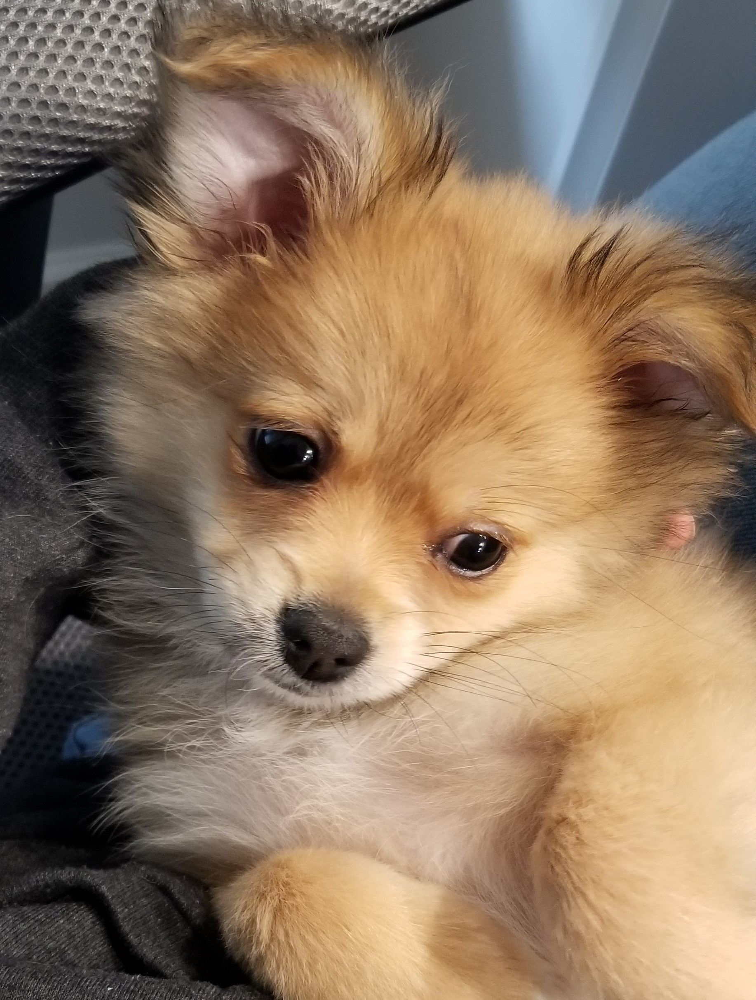

🐾It's a Pom's life🐾

I'm living my dream life and I'd love to share
my journey with you!
I'll be sharing my adventures and lots of pup
friendly reccomendations.
Be sure to join in on the fun!

Puppy Days
I was born in the perfect fall month of November. Even though I was born during the pandemic, I was not a pandemic pup. My parent's decided to adopt me at the end of January of 2020. As a puppy I was fiesty and didn't like to sleep very much. I hear most pups sleep when they are little to grow, but I would sleep only when I wanted to. I enjoyed playing with my toys, drinking lots of water, and eating anything and everything around me.